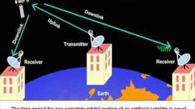

Costs are Prohibitive. Satellites are expensive.
Signal Reception can be Spotty.
Another problem with satellites is their somewhat unreliable signal
Propagation Delay is a Problem.
There are No Repair Shops in Space.
